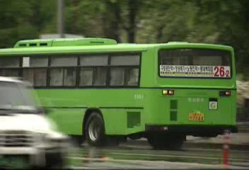

[녹색버스. 보기엔 시원하다]
7월 1일. 서울시 버스, 지하철 요금제 개편이 '개편 사태' 로 번지고 있다.
서울로 출근하지만 안양 버스를 이용하고 지하철도 한정거장 밖에 타지 않는 나로써는 지하철 요금이 찍히지 않는다는것 외에는 큰 불편함(?)을 느끼지 못하고 있다.
7월 1일 하루동안 지하철 요금이 부가되지 않아 발생한 손실액은 11억 4천만원이라고 한다.
그런데 이게 과연 손실일까?
어차피 지하철 수입의 부족분은 세금에서 충당하고 있지 않은가. 11억 4천만원이 부족하면 11억 4천만원의 세금을 지하철로 넣을꺼라는 말이다.
이렇게 투덜대던 찰나. 문뜩 이런 생각이 들었다.
" 세금은 대중교통을 이용하는 사람이든 이용하지 않는 사람이든 다 내는 거잖아? (탈세자 빼고..)
그럼 차라리 대중교통을 전면 무료화 하고 유지비를 세금으로 충당하면 어떨까? "
올커니. 그렇군.
대중교통 무료화라...
이렇게만 된다면
1. 부의 재 분배가 이루어진다.
- 그렇지. 대중교통을 전혀 이용하지 않는 고수익자들의 돈이 서민에게 쓰여지는 거니까.
2. 대중교통 활용율이 높아진다.
- 당연하지. 공짜가 되면 아무래도 승용차 몰던 사람들이 대중교통으로 옮겨올꺼 아냐.
세계적으로 일부 국가나 지역에서는 전화요금이 전면 무료, 혹은 시내 통화 무료로 운영되고 있다.
당연히 유지비는 세금으로 충당되고 있다는건데. 버스도 이렇게 될 수 있지 않을까?
물론 저소득자 이면서도 대중교통을 이용하지 않는 사람들에겐 다소 손해일 수 있다. 하지만 대중교통세(?)를 소득기준으로 부가한다면 저소득자들에게 오는 피해는 극소화 될 것이다.
자. 나름대로 좋은 방법 같긴 한데.
문제점은 뭐가 있을까?
여러가지 생각을 해 볼 수 있겠지만.
일단 실현 자체가 불가능 하다는 점이 가장 큰 문제점이다.
이유는?
집권층과 부자들에게 손해가 되기 때문이다.
망할....